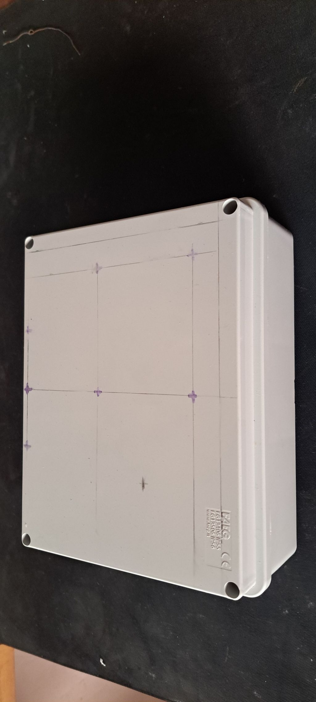
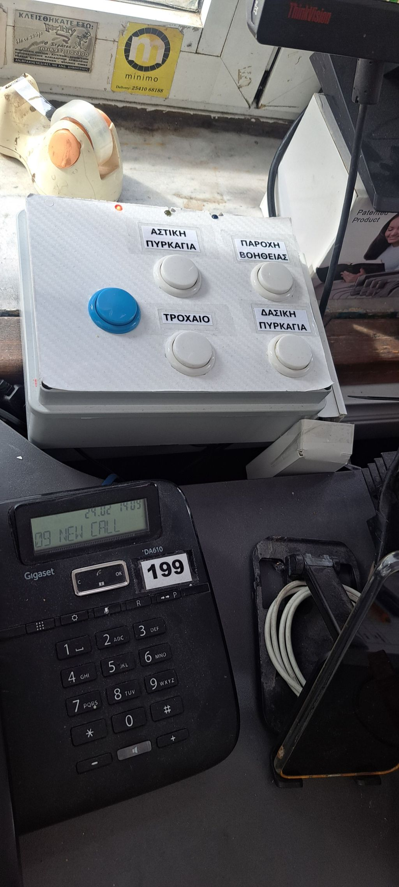
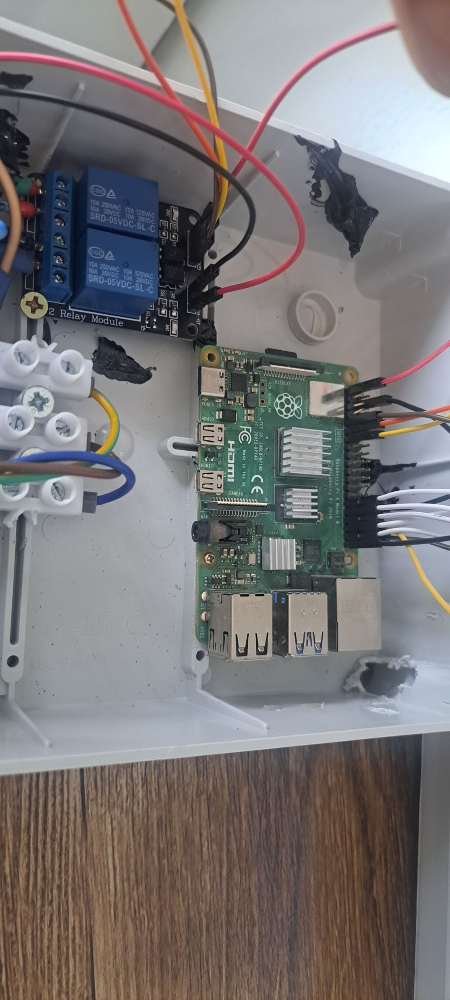
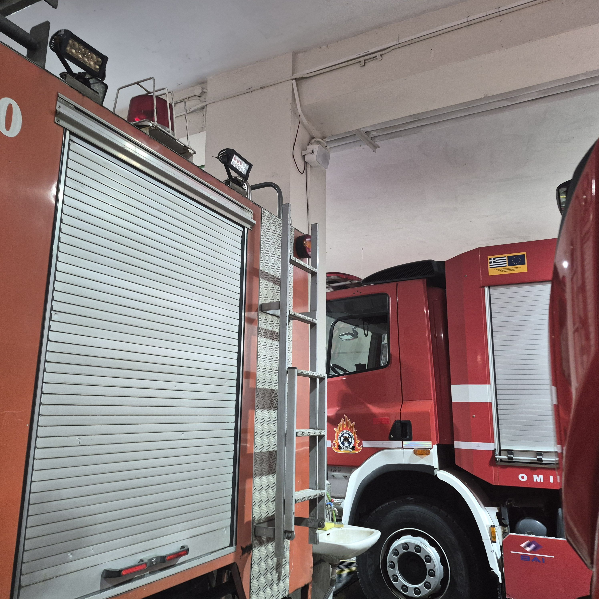

Παροχή Βοηθείας
Από κουδούνι σε φωνητική αναγγελία με Raspberry Pi
5 κουμπιά συμβάντων (αναπαραγωγη TTS Google - MP3 - TTS Google), relays για φώτα/ενισχυτή.
Πατώντας το άναλογο κουμπί(Παροχή βοηθείας,αστικη,δασική πυρκαγιά,τροχαίο) ενεργοποιείται ήχος με φωνητική ανακοίνωση.
Ενεργοποιούνται 2 relay.Το Πρώτο ανάβει άμμεσα τα φώτα του κτηρίου ως προειδοποίηση ,το αναπαράγει τον ανάλογο ήχο ειδοποίησης.
1 Κουμπι διαφορετικού χρώματος για ενεργοποίηση ήχου ανακοίνωσης με μικρόφωνο
Οι φωτογραφίες εμφανίζονται σε μικρότερο μέγεθος και ακολουθούν τα βίντεο του project.




| BCM Pin | Στοιχείο | Χρώμα/Signal |
|---|---|---|
| 5 | Αστική πυρκαγιά | Κόκκινο btn |
| 6 | Παροχή βοήθειας | Πράσινο btn |
| 13 | Τροχαίο | Κίτρινο btn |
| 19 | Δασική πυρκαγιά | Καφέ btn |
| 26 | Mic / Manual | Μαύρο btn |
| 17 | Relay1 (φώτα) | COM→φώτα, NO |
| 27 | Relay2 (flash) | COM→προειδοπ. |
| 16 | LED κόκκινο | Button press |
| 20 | LED μπλε | Manual ON |
| 12 | LED πράσινο | Running OK |
| GND | Κοινό | - |
| 3.3V | Pull-up buttons | - |
sudo apt update && sudo apt install python3-pip mpg123pip3 install RPi.GPIO gtts/home/pialsamixer (Speaker 100%), mpg123 astiki.mp3set_volume_93(): 93% Speaker/Mic με amixer πριν κάθε ήχο (σταθερή ένταση).
DAY_START=7:30, DAY_END=22:15: Relay1 auto ON/OFF, thread κάθε 30s.
Thread: /dev/watchdog '1' κάθε 10s → anti-crash.
play_tts_mp3_tts(): TTS ("Αστική Πυρκαγιά") + mp3 + TTS repeatgTTS(lang="el"): On-demand MP3Poll buttons 50ms, debounce 0.3s → ΚΑΘΕ πάτημα δουλεύει!
sudo nano /etc/systemd/system/koudounia.service
[Unit]
Description=ΠΥ Ξάνθης Koudounia Alarm
After=network.target sound.target
[Service]
ExecStart=/usr/bin/python3 /home/pi/koudounia.py
WorkingDirectory=/home/pi
Restart=always
RestartSec=5
User=pi
StandardOutput=journal
[Install]
WantedBy=multi-user.targetsudo systemctl daemon-reload
sudo systemctl enable koudounia
sudo systemctl start koudounia
journalctl -u koudounia -fΓιατί relay1 16 ώρες/ημέρα (07:00-22:00):
Οι απλοί ενισχυτές, ακόμα και οι «επαγγελματικοί» όπως ο PRM120, αναγράφουν στο manual ότι δεν προορίζονται για 24/7 ασταμάτητη λειτουργία.
Αρχική ιδέα: ON/Οff η τροφοδοσια του ενισχυτή με κάθε αναγγελία → Πρόβλημα με warmup του ενισυχτη,οι ήχοι κοβόταν(θελει 3-5s) για να αναψει ο ενισχυτής.
Λύση: ON 16 ώρες → άμεσοι ήχοι. Νύχτα: εδωσα 5s delay για την αναπαραγωγη του ήχου (warmup χρόνος).
Μελλοντική βελτίωση: Phone Ring detector → προ-ενεργοποίηση ενισχυτή μολις "χτυπήσει" το 199 ή το σταθερό.
Δημήτρης Γεωργιάδης